library(ggplot2)
library(dplyr)
library(tidyr)
library(scales)
library(lubridate)
# 设置主题
theme_set(theme_minimal(base_size = 14))折线图与时间序列可视化完全指南
可视化
ggplot2
时间序列
从基础折线图到复杂时间序列展示：误差带、多组对比、注释技巧与交互式图表完全教程。
前言
折线图是数据可视化中最基础也是最重要的图表类型之一。它特别适合展示：
- 时间序列数据：股价、温度变化、疾病发病率
- 趋势变化：实验结果随条件变化
- 多组对比：不同组别在时间维度上的差异
本教程将从基础到高级，全面介绍 R 语言中折线图的绑制技巧。
1. ggplot2 基础折线图
1.1 准备工作
1.2 创建示例数据
# 模拟月度销售数据
set.seed(42)
months <- seq(as.Date("2024-01-01"), as.Date("2025-12-31"), by = "month")
sales_data <- data.frame(
date = months,
product_A = 100 + cumsum(rnorm(length(months), 5, 10)),
product_B = 80 + cumsum(rnorm(length(months), 3, 8)),
product_C = 60 + cumsum(rnorm(length(months), 4, 12))
)
head(sales_data) date product_A product_B product_C
1 2024-01-01 118.7096 98.16155 58.82265
2 2024-02-01 118.0626 97.71779 70.69042
3 2024-03-01 126.6939 98.65964 78.55352
4 2024-04-01 138.0225 87.55433 73.14746
5 2024-05-01 147.0652 94.23511 96.05619
6 2024-06-01 151.0040 92.11515 107.770981.3 基础折线图
# 最简单的折线图
ggplot(sales_data, aes(x = date, y = product_A)) +
geom_line(color = "#4e79a7", linewidth = 1) +
labs(
title = "产品 A 月度销售趋势",
x = "日期",
y = "销售额（万元）"
)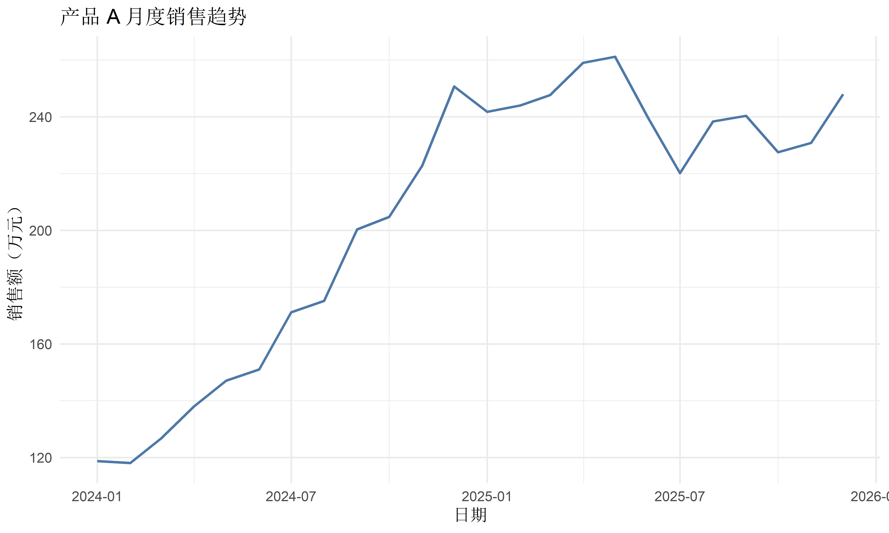
1.4 添加数据点
ggplot(sales_data, aes(x = date, y = product_A)) +
geom_line(color = "#4e79a7", linewidth = 1) +
geom_point(color = "#4e79a7", size = 2.5, shape = 21, fill = "white", stroke = 1.5) +
labs(
title = "产品 A 月度销售趋势",
subtitle = "添加数据点使趋势更清晰",
x = "日期",
y = "销售额（万元）"
)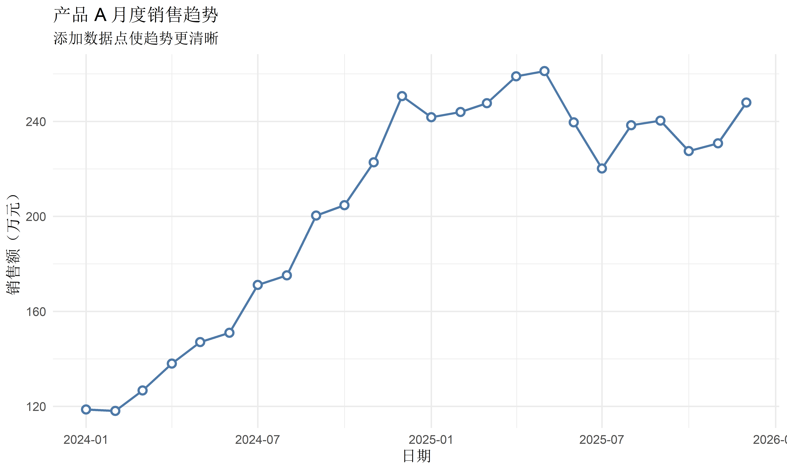
2. 多组折线对比
2.1 数据整理（宽格式转长格式）
# 转换为长格式
sales_long <- sales_data %>%
pivot_longer(
cols = starts_with("product"),
names_to = "product",
values_to = "sales"
) %>%
mutate(product = case_when(
product == "product_A" ~ "产品 A",
product == "product_B" ~ "产品 B",
product == "product_C" ~ "产品 C"
))
head(sales_long)# A tibble: 6 × 3
date product sales
<date> <chr> <dbl>
1 2024-01-01 产品 A 119.
2 2024-01-01 产品 B 98.2
3 2024-01-01 产品 C 58.8
4 2024-02-01 产品 A 118.
5 2024-02-01 产品 B 97.7
6 2024-02-01 产品 C 70.72.2 多组折线图
ggplot(sales_long, aes(x = date, y = sales, color = product)) +
geom_line(linewidth = 1) +
scale_color_manual(values = c("#4e79a7", "#f28e2b", "#59a14f")) +
labs(
title = "三款产品销售趋势对比",
x = "日期",
y = "销售额（万元）",
color = "产品"
) +
theme(legend.position = "top")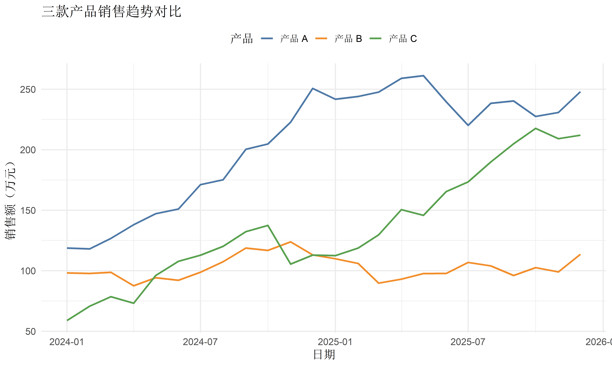
2.3 添加区分点形状
ggplot(sales_long, aes(x = date, y = sales, color = product, shape = product)) +
geom_line(linewidth = 1) +
geom_point(size = 2.5) +
scale_color_manual(values = c("#4e79a7", "#f28e2b", "#59a14f")) +
scale_shape_manual(values = c(16, 17, 15)) + # 圆形、三角、方形
labs(
title = "三款产品销售趋势对比",
subtitle = "使用不同形状区分产品",
x = "日期",
y = "销售额（万元）",
color = "产品",
shape = "产品"
) +
theme(legend.position = "top")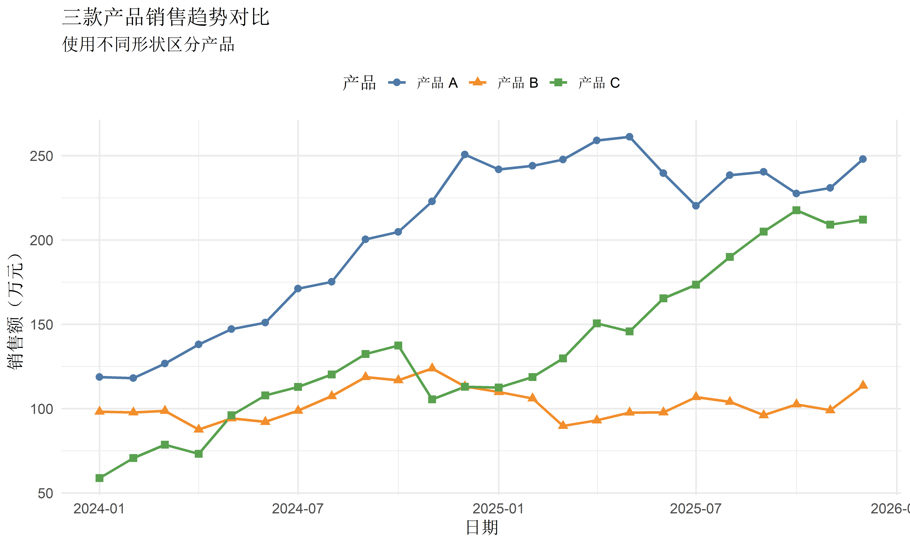
3. 误差带与置信区间
3.1 创建带误差的数据
# 模拟带误差的实验数据
time_points <- 1:10
experiment_data <- data.frame(
time = time_points,
mean_treatment = 10 + log(time_points) * 5,
se_treatment = runif(length(time_points), 0.5, 1.5),
mean_control = 10 + log(time_points) * 2,
se_control = runif(length(time_points), 0.3, 1)
)
experiment_data <- experiment_data %>%
mutate(
lower_treatment = mean_treatment - 1.96 * se_treatment,
upper_treatment = mean_treatment + 1.96 * se_treatment,
lower_control = mean_control - 1.96 * se_control,
upper_control = mean_control + 1.96 * se_control
)3.2 误差带（ribbon）
ggplot(experiment_data, aes(x = time)) +
# 误差带
geom_ribbon(aes(ymin = lower_treatment, ymax = upper_treatment),
fill = "#4e79a7", alpha = 0.2
) +
geom_ribbon(aes(ymin = lower_control, ymax = upper_control),
fill = "#e15759", alpha = 0.2
) +
# 折线
geom_line(aes(y = mean_treatment, color = "干预组"), linewidth = 1) +
geom_line(aes(y = mean_control, color = "对照组"), linewidth = 1) +
scale_color_manual(values = c("干预组" = "#4e79a7", "对照组" = "#e15759")) +
labs(
title = "干预效果时间曲线",
subtitle = "阴影区域表示 95% 置信区间",
x = "时间（周）",
y = "指标值",
color = "组别"
) +
theme(legend.position = c(0.85, 0.2))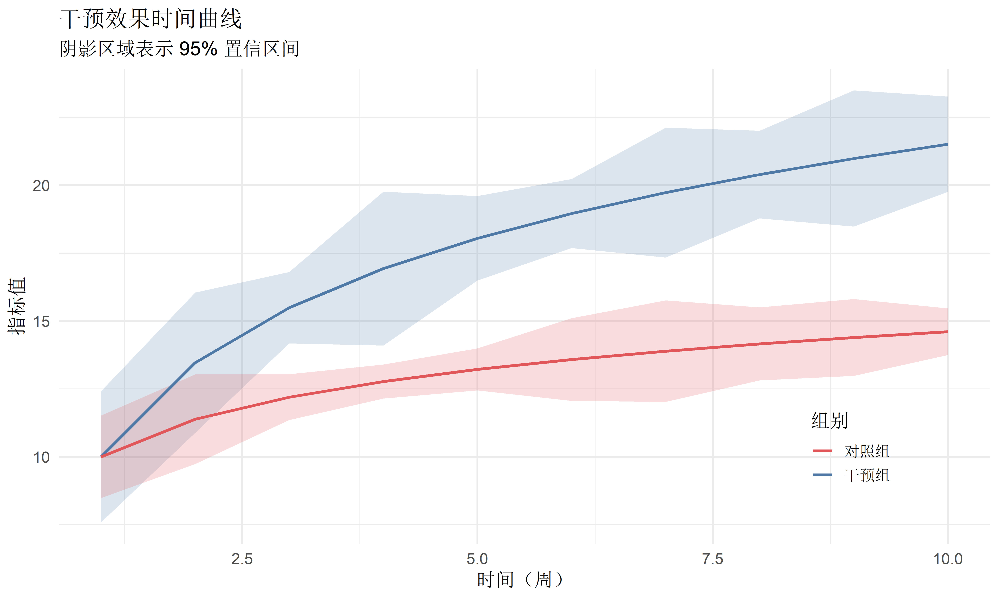
3.3 误差线（errorbar）
# 转换为长格式更方便
exp_long <- experiment_data %>%
select(time, mean_treatment, mean_control, se_treatment, se_control) %>%
pivot_longer(
cols = c(mean_treatment, mean_control),
names_to = "group",
names_prefix = "mean_",
values_to = "mean"
) %>%
mutate(
se = ifelse(group == "treatment", experiment_data$se_treatment, experiment_data$se_control),
group = ifelse(group == "treatment", "干预组", "对照组")
)
ggplot(exp_long, aes(x = time, y = mean, color = group)) +
geom_line(linewidth = 1) +
geom_point(size = 3) +
geom_errorbar(aes(ymin = mean - 1.96 * se, ymax = mean + 1.96 * se),
width = 0.2, linewidth = 0.8
) +
scale_color_manual(values = c("干预组" = "#4e79a7", "对照组" = "#e15759")) +
labs(
title = "干预效果时间曲线",
subtitle = "误差线表示 95% 置信区间",
x = "时间（周）",
y = "指标值",
color = "组别"
)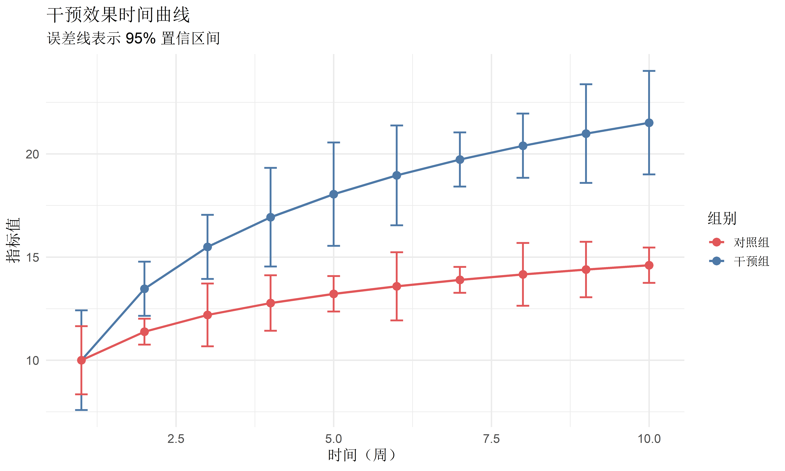
4. 注释与标记技巧
4.1 添加文本注释
ggplot(sales_data, aes(x = date, y = product_A)) +
geom_line(color = "#4e79a7", linewidth = 1) +
# 标注最高点
annotate("point",
x = sales_data$date[which.max(sales_data$product_A)],
y = max(sales_data$product_A), color = "red", size = 4
) +
annotate("text",
x = sales_data$date[which.max(sales_data$product_A)],
y = max(sales_data$product_A) + 10,
label = paste0("峰值: ", round(max(sales_data$product_A), 1)),
color = "red", fontface = "bold"
) +
# 标注区域
annotate("rect",
xmin = as.Date("2024-11-01"), xmax = as.Date("2025-02-01"),
ymin = -Inf, ymax = Inf, fill = "yellow", alpha = 0.2
) +
annotate("text",
x = as.Date("2024-12-15"), y = min(sales_data$product_A),
label = "促销季", fontface = "italic"
) +
labs(
title = "产品 A 销售趋势与关键节点",
x = "日期",
y = "销售额（万元）"
)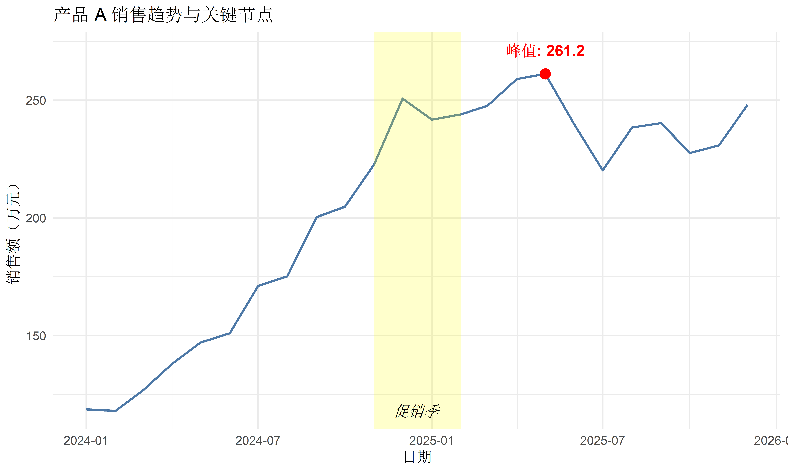
4.2 添加垂直参考线
# 标记重要事件
events <- data.frame(
date = as.Date(c("2024-06-01", "2025-01-01", "2025-06-01")),
event = c("产品升级", "价格调整", "营销活动")
)
ggplot(sales_data, aes(x = date, y = product_A)) +
geom_line(color = "#4e79a7", linewidth = 1) +
geom_vline(
data = events, aes(xintercept = date),
linetype = "dashed", color = "gray50"
) +
geom_label(
data = events, aes(x = date, y = max(sales_data$product_A) * 0.95, label = event),
size = 3, fill = "white", label.size = 0.5
) +
labs(
title = "产品 A 销售趋势与关键事件",
x = "日期",
y = "销售额（万元）"
)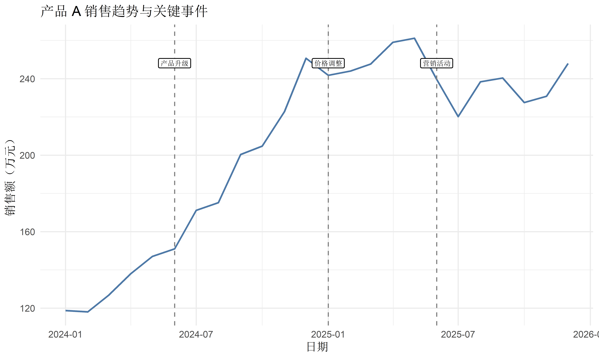
4.3 直接标注线条终点
# 获取最新数据点
last_points <- sales_long %>%
group_by(product) %>%
filter(date == max(date))
ggplot(sales_long, aes(x = date, y = sales, color = product)) +
geom_line(linewidth = 1) +
geom_text(
data = last_points, aes(label = product),
hjust = -0.1, fontface = "bold", size = 4
) +
scale_color_manual(values = c("#4e79a7", "#f28e2b", "#59a14f")) +
scale_x_date(expand = expansion(mult = c(0.02, 0.15))) + # 右侧留空间
labs(
title = "三款产品销售趋势",
subtitle = "直接标注替代图例",
x = "日期",
y = "销售额（万元）"
) +
theme(legend.position = "none")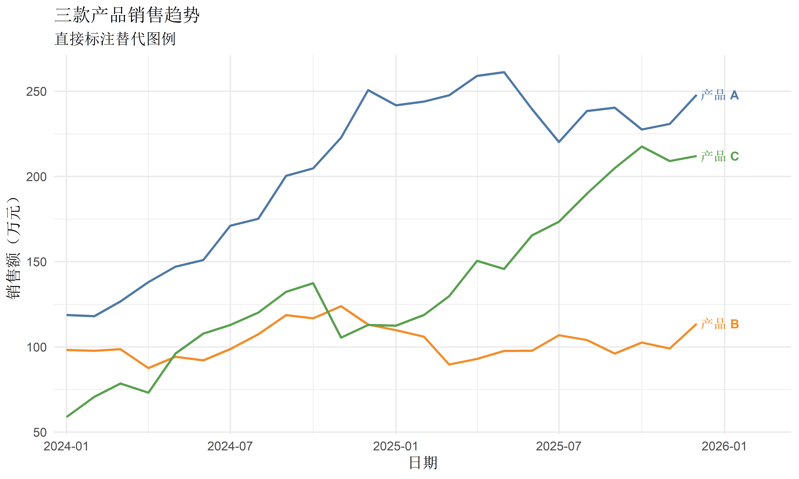
5. 时间轴格式化
5.1 日期格式控制
ggplot(sales_data, aes(x = date, y = product_A)) +
geom_line(color = "#4e79a7", linewidth = 1) +
scale_x_date(
date_breaks = "3 months", # 每3个月一个刻度
date_labels = "%Y年%m月", # 中文日期格式
expand = c(0.02, 0.02)
) +
labs(
title = "产品 A 销售趋势",
x = NULL,
y = "销售额（万元）"
) +
theme(axis.text.x = element_text(angle = 45, hjust = 1))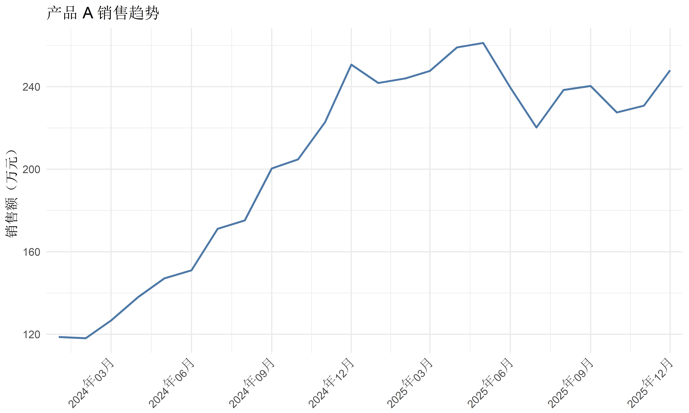
5.2 常用日期格式
| 格式代码 | 含义 | 示例 |
|---|---|---|
%Y |
4位年份 | 2024 |
%y |
2位年份 | 24 |
%m |
月份（数字） | 01-12 |
%b |
月份（缩写） | Jan |
%B |
月份（全称） | January |
%d |
日期 | 01-31 |
%H |
小时（24h） | 00-23 |
%M |
分钟 | 00-59 |
%w |
星期（数字） | 0-6 |
%A |
星期（全称） | Monday |
6. 分面与小多图
6.1 facet_wrap 按产品分面
ggplot(sales_long, aes(x = date, y = sales)) +
geom_line(aes(color = product), linewidth = 1) +
facet_wrap(~product, ncol = 1, scales = "free_y") +
scale_color_manual(values = c("#4e79a7", "#f28e2b", "#59a14f")) +
labs(
title = "各产品销售趋势（独立纵轴）",
x = "日期",
y = "销售额（万元）"
) +
theme(legend.position = "none")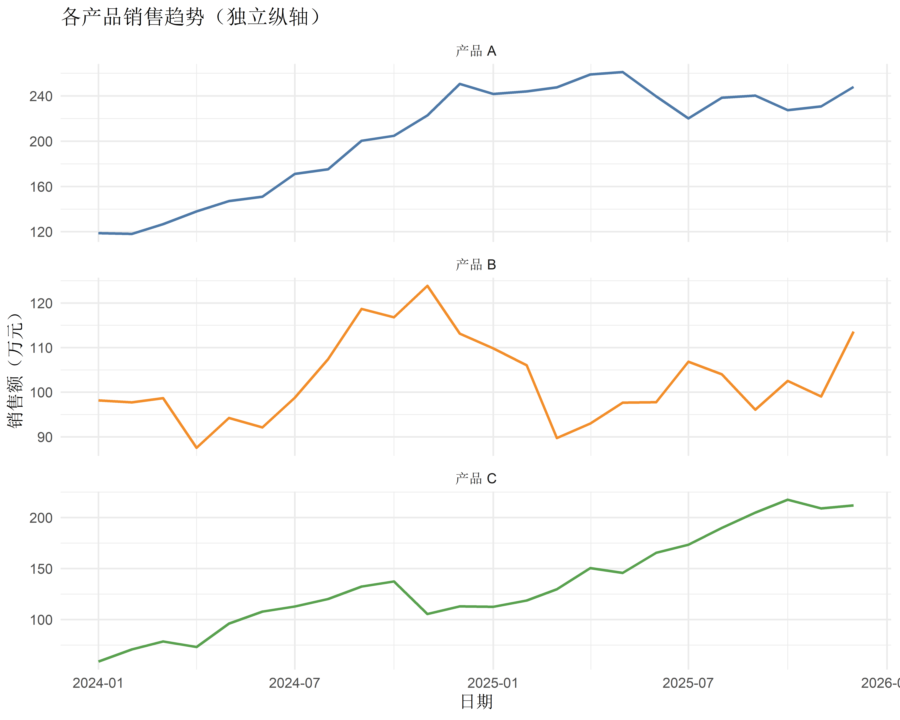
6.2 添加趋势背景
# 添加整体趋势作为背景
ggplot() +
# 背景：所有数据（浅色）
geom_line(
data = sales_long, aes(x = date, y = sales, group = product),
color = "gray80", linewidth = 0.5
) +
# 前景：当前分面数据（深色）
geom_line(
data = sales_long, aes(x = date, y = sales, color = product),
linewidth = 1
) +
facet_wrap(~product, ncol = 1) +
scale_color_manual(values = c("#4e79a7", "#f28e2b", "#59a14f")) +
labs(
title = "各产品销售趋势对比",
subtitle = "灰色线条为其他产品趋势",
x = "日期",
y = "销售额（万元）"
) +
theme(
legend.position = "none",
panel.grid.minor = element_blank()
)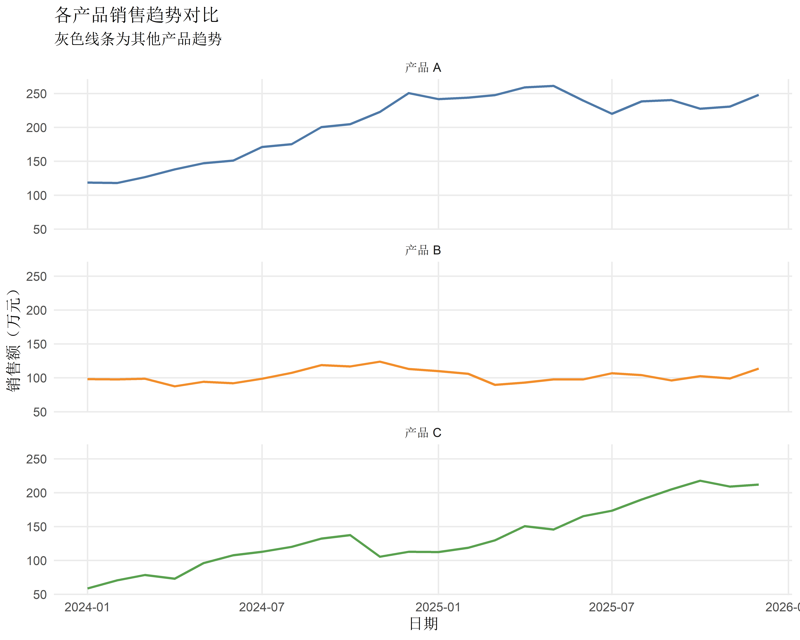
7. 平滑曲线与趋势拟合
7.1 局部回归平滑 (LOESS)
# 添加噪声数据
set.seed(123)
noisy_data <- data.frame(
x = 1:100,
y = sin(1:100 / 10) * 10 + rnorm(100, 0, 2)
)
ggplot(noisy_data, aes(x = x, y = y)) +
geom_point(color = "gray60", alpha = 0.6) +
geom_smooth(
method = "loess", span = 0.3, color = "#4e79a7",
fill = "#4e79a7", alpha = 0.2
) +
labs(
title = "LOESS 平滑曲线",
subtitle = "span = 0.3，阴影为置信区间",
x = "X",
y = "Y"
)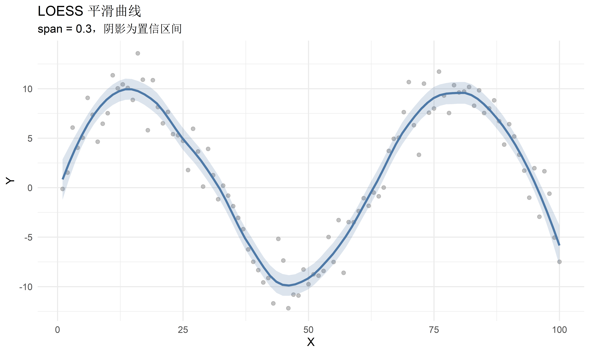
7.2 线性趋势拟合
ggplot(sales_data, aes(x = date, y = product_A)) +
geom_point(color = "#4e79a7", alpha = 0.6) +
geom_line(color = "#4e79a7", alpha = 0.3) +
geom_smooth(method = "lm", color = "#e15759", fill = "#e15759", alpha = 0.2) +
labs(
title = "销售额线性趋势",
subtitle = "红色为线性拟合及 95% 置信区间",
x = "日期",
y = "销售额（万元）"
)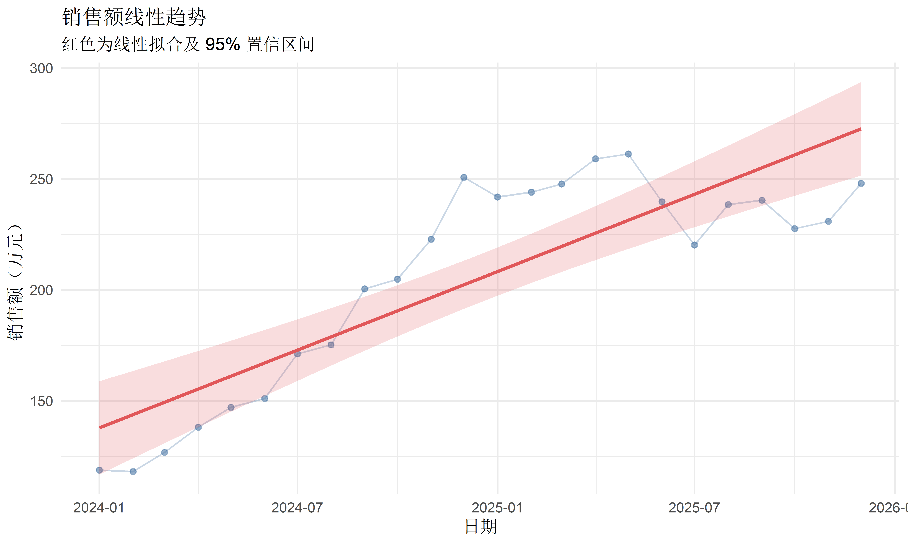
8. 阶梯图与变化强调
8.1 阶梯折线图
# 阶梯图适合展示离散变化
ggplot(sales_data, aes(x = date, y = product_A)) +
geom_step(color = "#4e79a7", linewidth = 1) +
geom_point(color = "#4e79a7", size = 2) +
labs(
title = "产品 A 价格变动（阶梯图）",
subtitle = "阶梯图强调离散时间点的值变化",
x = "日期",
y = "价格（元）"
)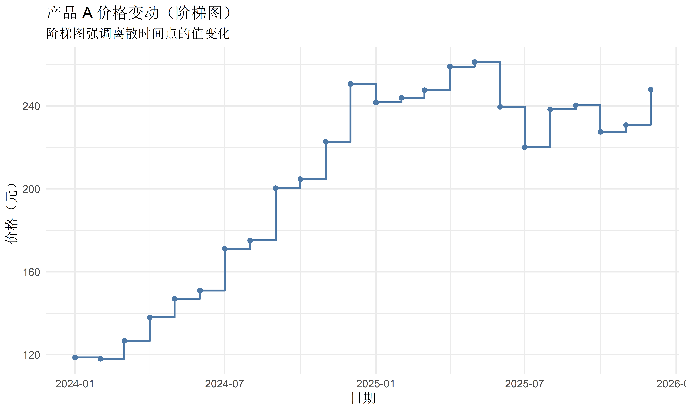
8.2 高亮关键区间
# 识别增长和下降区间
sales_data <- sales_data %>%
mutate(
change = product_A - lag(product_A),
direction = ifelse(change >= 0, "增长", "下降")
)
ggplot(sales_data, aes(x = date, y = product_A)) +
geom_line(color = "gray50", linewidth = 0.5) +
geom_point(aes(color = direction), size = 3) +
scale_color_manual(values = c("增长" = "#59a14f", "下降" = "#e15759"), na.value = "gray") +
labs(
title = "销售额增减变化",
x = "日期",
y = "销售额（万元）",
color = "变化方向"
)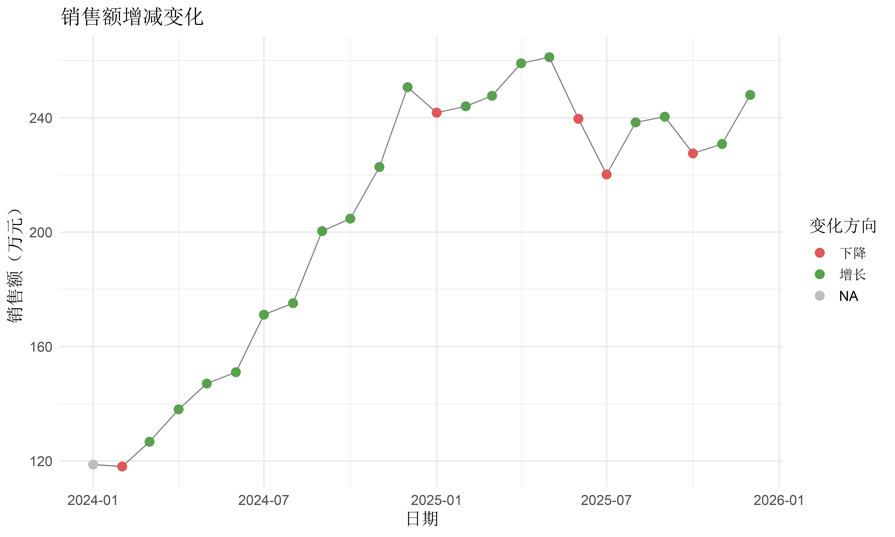
9. 高级美化技巧
9.1 自定义背景网格
ggplot(sales_long, aes(x = date, y = sales, color = product)) +
geom_line(linewidth = 1) +
scale_color_manual(values = c("#4e79a7", "#f28e2b", "#59a14f")) +
labs(
title = "产品销售趋势",
x = NULL,
y = "销售额（万元）"
) +
theme_minimal(base_size = 14) +
theme(
panel.grid.major.y = element_line(color = "gray90", linewidth = 0.5),
panel.grid.minor.y = element_blank(),
panel.grid.major.x = element_blank(),
panel.grid.minor.x = element_blank(),
legend.position = "top",
plot.title = element_text(face = "bold", size = 16),
axis.line.x = element_line(color = "gray40")
)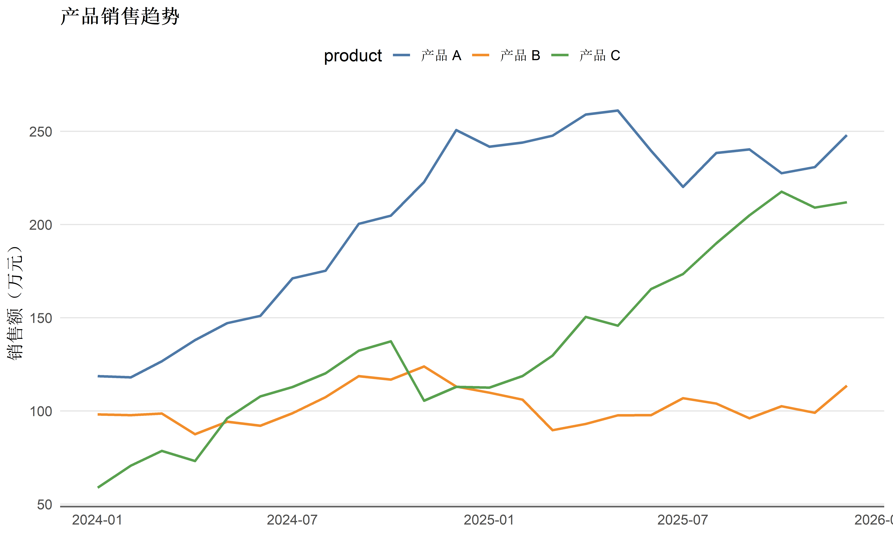
9.2 渐变色折线
# 使用颜色表示另一个变量
sales_data$intensity <- sales_data$product_A / max(sales_data$product_A)
ggplot(sales_data, aes(x = date, y = product_A, color = intensity)) +
geom_line(linewidth = 1.5) +
scale_color_gradient2(low = "#2166ac", mid = "#f7f7f7", high = "#b2182b", midpoint = 0.5) +
labs(
title = "销售额热度图",
x = "日期",
y = "销售额（万元）",
color = "相对强度"
)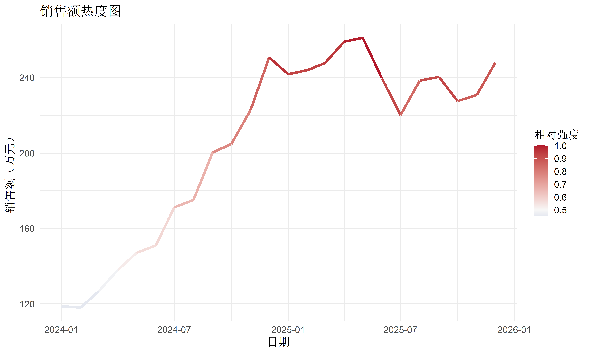
10. 交互式折线图 (plotly)
10.1 基础交互图
library(plotly)
# 创建基础 ggplot
p <- ggplot(sales_long, aes(x = date, y = sales, color = product)) +
geom_line(linewidth = 0.8) +
scale_color_manual(values = c("#4e79a7", "#f28e2b", "#59a14f")) +
labs(
title = "产品销售趋势（交互式）",
x = "日期",
y = "销售额（万元）"
) +
theme_minimal()
# 转换为 plotly
ggplotly(p, tooltip = c("x", "y", "color"))10.2 自定义悬停信息
# 添加自定义悬停文本
sales_long <- sales_long %>%
mutate(
hover_text = paste0(
"<b>", product, "</b><br>",
"日期: ", format(date, "%Y年%m月"), "<br>",
"销售额: ", round(sales, 1), " 万元"
)
)
p2 <- ggplot(sales_long, aes(x = date, y = sales, color = product, text = hover_text)) +
geom_line(linewidth = 0.8) +
scale_color_manual(values = c("#4e79a7", "#f28e2b", "#59a14f")) +
labs(title = "产品销售趋势", x = "日期", y = "销售额（万元）") +
theme_minimal()
ggplotly(p2, tooltip = "text")11. 实战案例：疫情曲线
# 模拟疫情数据
set.seed(2020)
dates <- seq(as.Date("2020-01-20"), as.Date("2020-06-30"), by = "day")
n_days <- length(dates)
covid_data <- data.frame(
date = dates,
new_cases = c(
rpois(30, 50), # 初期
rpois(30, 500), # 爆发期
rpois(30, 2000), # 高峰
rpois(30, 800), # 下降
rpois(n_days - 120, 100) # 平稳（动态计算剩余天数）
)
)
# 计算7日移动平均
covid_data <- covid_data %>%
mutate(
ma7 = zoo::rollmean(new_cases, k = 7, fill = NA, align = "right"),
cumulative = cumsum(new_cases)
)
# 绑制
p_cases <- ggplot(covid_data, aes(x = date)) +
geom_col(aes(y = new_cases), fill = "steelblue", alpha = 0.4, width = 1) +
geom_line(aes(y = ma7), color = "darkred", linewidth = 1.2) +
annotate("text",
x = as.Date("2020-05-01"), y = max(covid_data$new_cases, na.rm = TRUE) * 0.9,
label = "7日移动平均", color = "darkred", fontface = "bold"
) +
labs(
title = "每日新增病例",
x = NULL,
y = "病例数"
)
p_cum <- ggplot(covid_data, aes(x = date, y = cumulative)) +
geom_area(fill = "steelblue", alpha = 0.3) +
geom_line(color = "steelblue", linewidth = 1) +
labs(
title = "累计病例数",
x = "日期",
y = "累计病例"
)
# 组合
library(patchwork)
p_cases / p_cum +
plot_annotation(
title = "疫情发展曲线",
subtitle = "2020年1月至6月数据",
theme = theme(
plot.title = element_text(size = 18, face = "bold"),
plot.subtitle = element_text(size = 12, color = "gray50")
)
)
总结
| 场景 | 推荐方法 |
|---|---|
| 单组趋势 | geom_line() + geom_point() |
| 多组对比 | 长格式 + color 映射 |
| 误差展示 | geom_ribbon() 或 geom_errorbar() |
| 标注事件 | geom_vline() + annotate() |
| 时间格式 | scale_x_date() |
| 分面展示 | facet_wrap() |
| 趋势拟合 | geom_smooth() |
| 交互式 | plotly::ggplotly() |
[!TIP] 配色建议：折线图通常使用 5 种以内的颜色，过多会影响可读性。推荐使用
RColorBrewer或 Tableau 配色方案。